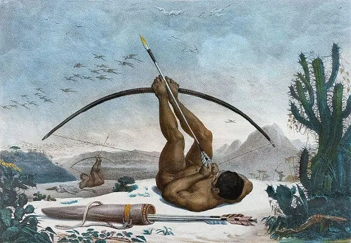
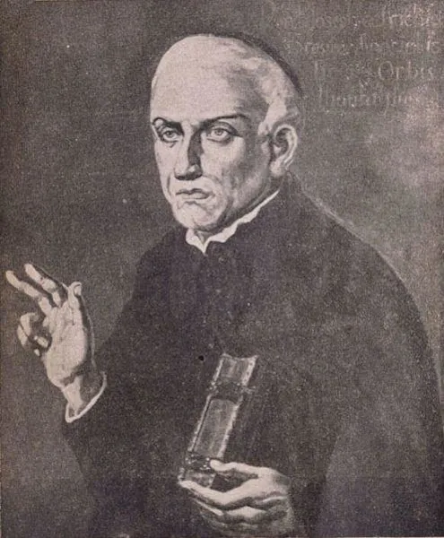

"Quando os portugueses desembarcaram no Brasil em 1500, buscou-se o primeiro contato com os nativos para conhecer-se melhor a região e suas riquezas. O primeiro ciclo econômico da colônia foi o pau-brasil. Os índios retiravam as árvores das florestas próximas ao litoral e colocavam-nas nas caravelas portuguesas em troca de espelhos e bugigangas que não tinham valor comercial para os portugueses, mas chamavam a atenção dos nativos. Essa troca chamava-se escambo. Enquanto Portugal lucrava com o comércio de especiarias das Índias, as novas terras na América serviam de entreposto, de parada das navegações vindas de Portugal para, em seguida, continuarem a viagem em direção às Índias. Enquanto isso, o comércio do pau-brasil era mantido."
Causas
"As causas da escravidão indígena estão ligadas principalmente ao propósito dos portugueses em colonizar o Brasil. Ao contrário do que houve na América do Norte, os colonizadores portugueses não deixaram seus reinos para morar aqui. Eles vinham apenas para explorar as riquezas do Brasil. A única mão de obra disponível era a indígena, no entanto, o trabalho escravo e em grande escala não era comum para os índios. Os colonizadores utilizaram-se de ameaças, da força física e da propagação de doenças para forçar os índios a trabalharem para a Coroa. Várias tribos foram dizimadas por conta do conflito com os portugueses ao recusarem o trabalho escravo. Muitos índios fugiram para o interior do Brasil, evitando ser escravizados. O fracasso da escravidão indígena fez com que os portugueses optassem pela escravidão negra oriunda da África."
Escravidão entre os indígenas
"A escravidão entre os índios acontecia logo após uma tribo vencer a outra em um combate. Os derrotados eram transformados em mão de obra escrava, mas o trabalho exigido não se comparava com o que os portugueses esperavam que os índios fizessem. A escravidão entre os índios era o trabalho na tribo. Além disso, havia tribos canibais que comiam a carne dos adversários, pois acreditavam que, dessa forma, teriam as mesmas qualidades daqueles que morreram no combate. Por exemplo, se um inimigo capturado era um bom corredor, suas pernas eram comidas para que a velocidade delas fosse agregada a quem as comesse."
Igreja e a escravidão indígena
"Os primeiros anos da colonização efetiva do Brasil, a partir de 1530, expuseram conflitos entre a Igreja e os colonos portugueses. Os colonos queriam escravizar os índios para trabalharem nas plantações de cana-de-açúcar, enquanto os religiosos aproximaram-se deles para catequizá-los. Os índios eram vistos como seres inferiores, que necessitavam da conversão ao catolicismo para que suas almas não fossem condenadas. Por isso, as práticas religiosas realizadas pelas tribos antes da chegada dos portugueses foram abolidas pelos padres jesuítas. Percebendo que os colonos não cessariam de persegui-los até conseguirem capturá-los para o trabalho nas lavouras de açúcar, os padres jesuítas fugiram com os índios para o interior do Brasil, principalmente para as terras mais ao sul e ao norte da colônia. Surgiam assim as missões jesuítas, que protegiam os índios da perseguição dos portugueses e nas quais eram ensinados a doutrina católica e o preparo da terra para a plantação dos alimentos a serem consumidos nelas. Esse avanço jesuíta foi o primeiro movimento de interiorização do Brasil. Os jesuítas alcançaram o norte da colônia, principalmente a região próxima da Floresta Amazônica. Essas expedições religiosas ao norte descobriram as drogas do sertão, produtos oriundos da floresta".
